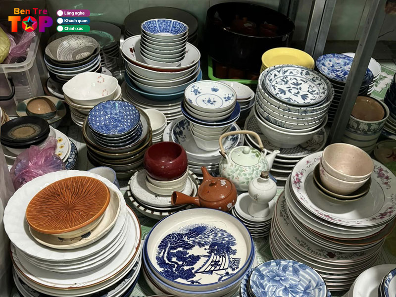
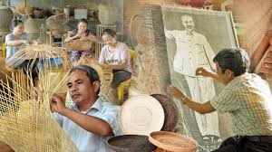

Làng nghề nổi bật
Gốm sứ
Nghề làm gốm ở Bến Tre là một trong những ngành nghề truyền thống nổi bật và gắn liền với văn hóa, lịch sử của vùng đất này...
Lịch sử lâu đời: Nghề làm gốm ở Bến Tre đã có từ rất lâu, ít nhất là từ thời kỳ phong kiến...
Chất liệu đất: Bến Tre sở hữu nguồn đất sét chất lượng, rất thích hợp để làm gốm...
Quy trình làm gốm: Quy trình làm gốm ở Bến Tre thường khá công phu...
Sản phẩm đa dạng: Gốm Bến Tre không chỉ có các vật dụng sinh hoạt như chén, đĩa...
Ảnh hưởng văn hóa: Nghề làm gốm ở Bến Tre là một phần của di sản văn hóa dân gian miền Tây...
Đan tre
Nghề đan tre ở Bến Tre là một nghề truyền thống lâu đời, gắn liền với đời sống của người dân nơi đây. Bến Tre, được biết đến là "xứ dừa", có nguồn tài nguyên tre dồi dào, tạo điều kiện thuận lợi cho sự phát triển của nghề đan tre.
Người dân ở Bến Tre chủ yếu đan các sản phẩm như giỏ, rổ, nón, thúng, bàn ghế, và nhiều vật dụng khác phục vụ nhu cầu sinh hoạt hàng ngày. Quá trình đan tre đòi hỏi sự khéo léo và tinh tế từ đôi tay của người thợ, khi phải lựa chọn và xử lý những cây tre sao cho phù hợp với từng sản phẩm.
Điều đặc biệt là nghề đan tre không chỉ đơn giản là một nghề thủ công, mà còn mang đậm tính nghệ thuật. Những sản phẩm đan tre từ Bến Tre không chỉ bền đẹp mà còn thể hiện sự sáng tạo và phong cách riêng biệt của từng người thợ. Các sản phẩm này không chỉ được tiêu thụ trong nước mà còn xuất khẩu ra nhiều quốc gia, góp phần nâng cao giá trị của sản phẩm thủ công Việt Nam.
Ngoài giá trị kinh tế, nghề đan tre còn giúp bảo tồn và phát huy những giá trị văn hóa truyền thống của người dân Bến Tre, đồng thời tạo công ăn việc làm cho nhiều gia đình, đặc biệt là ở các vùng nông thôn.
Thủ công mỹ nghệ

Nghề làm đồ thủ công mỹ nghệ ở Bến Tre là một ngành nghề truyền thống, gắn liền với sự sáng tạo, khéo léo của người dân địa phương. Tại Bến Tre, các sản phẩm thủ công mỹ nghệ chủ yếu được làm từ nguyên liệu tự nhiên như dừa, tre, gỗ, mây, lá và đặc biệt là vỏ dừa. Đây là những vật liệu phong phú và dễ tìm thấy trong vùng đất này, tạo cơ hội cho người dân phát triển nghề thủ công.
Các sản phẩm thủ công mỹ nghệ ở Bến Tre rất đa dạng, từ những vật dụng trong gia đình như giỏ, rổ, đèn lồng, khay, đến các sản phẩm trang trí, quà lưu niệm hay đồ nội thất. Một trong những đặc trưng nổi bật là các sản phẩm làm từ vỏ dừa, như tượng dừa, bình hoa, và các sản phẩm đan lát, thể hiện sự khéo léo và tỉ mỉ của người thợ thủ công.
Nghề làm đồ thủ công mỹ nghệ không chỉ giúp bảo tồn những giá trị văn hóa truyền thống, mà còn mang lại nguồn thu nhập ổn định cho nhiều gia đình ở các vùng nông thôn Bến Tre. Những sản phẩm này không chỉ đáp ứng nhu cầu tiêu dùng trong nước mà còn được xuất khẩu ra nước ngoài, góp phần nâng cao giá trị của ngành thủ công mỹ nghệ Việt Nam.
Ngoài ra, nghề thủ công mỹ nghệ ở Bến Tre cũng góp phần phát triển du lịch, khi khách du lịch đến tham quan và mua sắm các sản phẩm đặc trưng của địa phương. Những làng nghề này đã trở thành điểm đến hấp dẫn cho những ai yêu thích sự tinh xảo, độc đáo trong các sản phẩm thủ công.